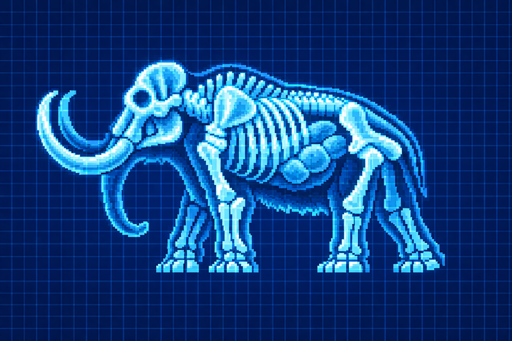
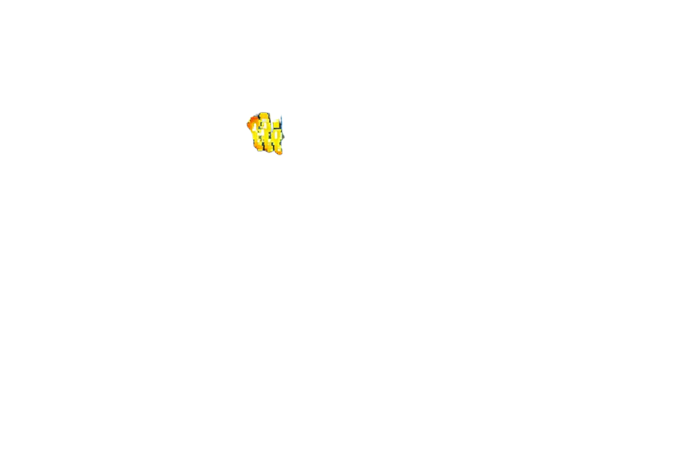

Activa los nodos de escaneo sobre el espécimen para analizar sus adaptaciones evolutivas.
Los datos han sido sincronizados con el procesador central de Veyron.
NUEVA EXHIBICIÓN DISPONIBLE:
ESTRECHO DE BERING
Los datos seleccionados no coinciden con la evidencia arqueológica.